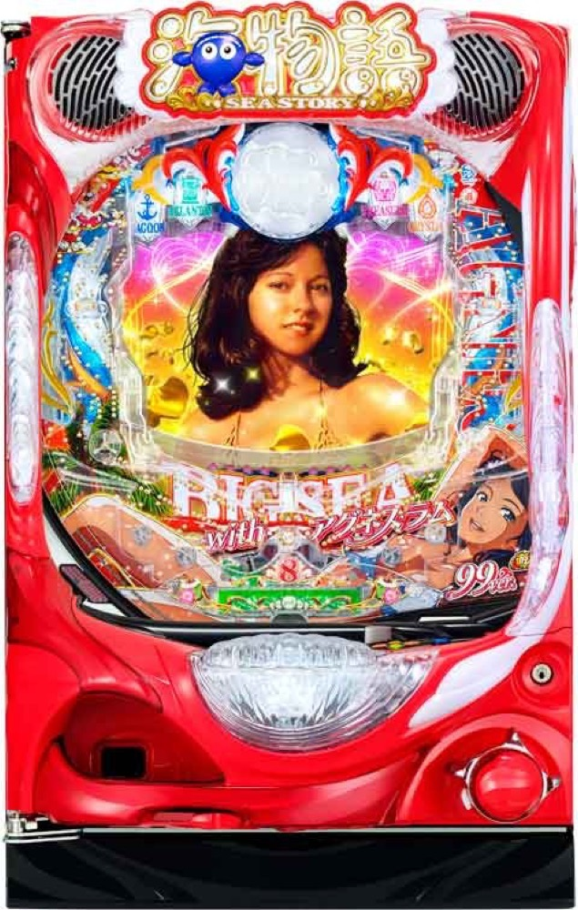

PA大海物語5 Withアグネス・ラム
ST10回＋時短から、約80.5%のハピネスチャンスへ。
- 導入
- 2023年7月
- メーカー
- 三洋物産
- 分類
- パチンコ
主要スペック
全国設置上位の甘海。約1/99.9の初当り、ST10回と時短25・50・120回、10R後のハピネスチャンスを代表値で簡易体験できます。
- 大当り約1/99.9・ST突入100%
- 電サポ25・50・120回
- 10R後のハピネスチャンス継続約80.5%
PA大海物語5 Withアグネス・ラムの見どころと計算条件
全国設置上位の甘海。約1/99.9の初当り、ST10回と時短25・50・120回、10R後のハピネスチャンスを代表値で簡易体験できます。
大海5 アグネスを数字で早分かり
結果では表記出玉と実獲得出玉を分け、250玉貸し・28玉交換の固定条件で差玉と収支を計算します。
甘海の王道にハピネスチャンス
全ての大当り後にST10回へ入り、その後は振り分けに応じて時短15・40・110回が付きます。
10R後は電サポ120回のハピネスチャンスへ進み、継続期待度は約80.5%です。
代表継続率で簡易化
通常の電サポ25回は継続約49%、50回は約61%、120回は約80.5%です。サイトでは初回振り分けを加重した約58.3%を通常継続の代表値にしています。
遊タイム、保留、内部状態は個別再現せず、初当りと連チャンの幅を比べる固定モデルです。
平均回転と投資目安の計算
通常時の初当り確率は約1/99.9です。当サイトでは、1,000円あたり18.5回転という機種別の固定条件を使い、平均投資目安を「99.9 ÷ 18.5 × 1,000円」で計算します。この条件では約5,400円が平均投資の目安です。
通常ヘソ、250玉貸し・28玉交換で固定し、ST＋時短突入率100%と継続率58.3%を簡易抽選します。表記出玉とは別に、打ち出しとオーバー入賞を簡易反映した実獲得出玉を収支へ使用します。平均値は長期間の理論上の目安であり、1回ごとの結果や実際の遊技収支を保証するものではありません。
シミュレーション結果の見方
当るまで初当りまでの回転数と投資目安
RUSHST＋時短への突入と連チャン回数
出玉表記出玉と、打ち出しを反映した実獲得出玉
最終収支実獲得出玉を28玉交換で換算した収支目安
結果は自動で「マイ記録」に保存され、同じ機種を何回試したか、最高収支、勝率をあとから確認できます。
簡易シミュレーターについて
初当り・ST＋時短・出玉の流れを固定条件で体験できます。JavaScriptを有効にすると、この位置にシミュレーター、演出、マイ記録、機種別ランキングが表示されます。
結果は娯楽・確率理解のための参考表示です。金銭的価値や交換価値はなく、実際の勝敗や収支を保証しません。18歳未満の方の利用はお控えください。
大海5 アグネスのよくある質問
大海5 アグネスはどんな台？
全国設置上位の甘海。 大当り約1/99.9・ST突入100%が主な確認ポイントです。
大海5 アグネスの平均投資目安は？
当サイトの固定条件では1,000円あたり18.5回転として、平均5,400円が目安です。実店舗の回転率や持ち玉状況で変わるため、実収支を保証する値ではありません。
シミュレーターでは何を体験できる？
初当りまでの回転数、ST＋時短への突入、連チャンと出玉、さらにハピネスチャンスを固定条件で簡易抽選します。実機の全演出や内部状態を完全再現するものではありません。
出玉と収支はどう計算する？
スペック上の表記出玉とは別に、打ち出しロスとオーバー入賞を簡易反映した実獲得出玉を算出します。250玉貸し・28玉交換の固定条件で差玉と収支目安を表示します。